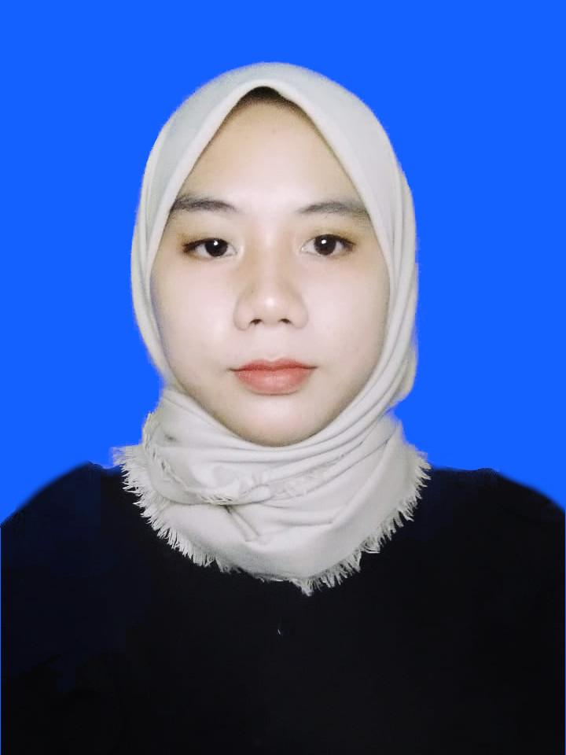

WELCOME TO MY PROFESSIONAL PORTFOLIO
Hello, I'm Elin Nadila Widodo
Management Student | Manufacturing Operations | Administration & Business Support
An active English speaker with an Upper-Intermediate (B2) level of proficiency, currently pursuing a Bachelor's degree in Management at Universitas Terbuka, with over six years of experience in manufacturing operations.
Experienced in operational monitoring, administration, document management, data processing, and team coordination. Eager to contribute to business operations and organizational development.
About Me
I am an active Bachelor of Management student at
Universitas Terbuka with over six years of experience
in manufacturing operations and previous experience
in administrative support.
My professional background has helped me develop
responsibility, discipline, teamwork, communication,
and organizational skills. I am interested in
organizational development, administration,
business operations, and continuous learning.
Education
Universitas Terbuka
Bachelor of Management
2026 – Present
SMK Ma'arif NU 1 Wangon
Office Administration
2015 – 2018
Work Experience
PT. Parkland World Indonesia 3 Jepara
Hotpress Operator
September 2020 – Present
- Operate and monitor press machines according to production procedures, quality requirements, and safety standards.
- Monitor production processes and report machine problems or operational issues to supervisors.
- Maintain productivity, accuracy, discipline, and daily production targets.
- Coordinate with team members and related departments to ensure smooth daily operations.
- Demonstrate teamwork, responsibility, and adaptability in a manufacturing environment.
MTs Tahfidz Al-Qur'an Arraudlah Ajibarang
Administration Staff
2018 – 2019
- Managed administrative documents, archives, correspondence, and registration records.
- Prepared regular reports and supported school activities, examinations, and meetings.
- Assisted with data processing and administrative services.
- Monitored administrative facilities and maintained organized documentation.
- Supported communication and coordination during school activities.
Internship Experience
Kantor Sekretariat Daerah Kabupaten Banyumas
Administrative Intern
2017 | 3 Months
- Assisted with daily administrative activities and document management.
- Supported basic data processing and administrative documentation.
- Helped organize files and maintain accurate records.
Technical Skills
Professional Skills
Selected Achievements
1st Place
Islamic Debate Competition
Pekan Olahraga dan Seni Daerah, 2018
1st Place
Martial Arts Seni Tunggal Putri
Pekan Olahraga Daerah se-Jawa Tengah, 2017
3rd Runner-Up
Seleksi Pekan Olahraga Nasional, 2016
Organization & Volunteer Experience
Committee Member
Pekan Olahraga dan Seni Daerah se-Jawa Tengah
2019
Volunteer
English Debate Competition – Olimpiade Olahraga Siswa Nasional
2019
Secretary
Student Council
2016 – 2017
Languages
Portfolio Highlights
Selected examples of my academic and professional work demonstrating my administrative, documentation, presentation, and data processing skills.
Administrative Documentation
Examples of document preparation, correspondence, and administrative organization.
Administrative SkillsData Processing
Examples of basic data organization, spreadsheet preparation, and information management.
Data ManagementPresentation Projects
Selected academic or professional presentations created using Microsoft PowerPoint.
Presentation SkillsWork samples can be added here as they become available.
Let's Connect
I am open to professional opportunities, collaboration, and career development.
Location: Jepara, Central Java, Indonesia
Phone: +62 814-7701-7570
Email: elinadilaw@gmail.com
LinkedIn: Elin Nadila Widodo